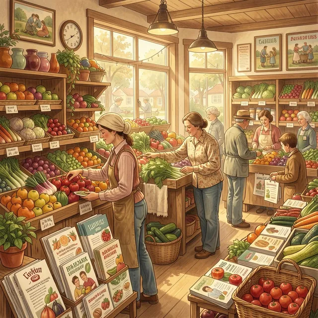

Every family deserves access to fresh, affordable food close to home.
FreshNest Mobile Market began with a simple belief: healthy food should be available to everyone, regardless of where they live.
Many neighborhoods face significant barriers to accessing fresh fruits, vegetables, dairy products, and nutritious meals. These communities are often referred to as food deserts because grocery stores offering healthy options can be difficult to reach.
FreshNest was created to bridge that gap by bringing healthy food directly into neighborhoods through mobile grocery markets, pop-up community events, subscription produce boxes, and local partnerships.

“To improve access to affordable, nutritious food while strengthening local communities through convenience, education, and healthy lifestyle support.”
We envision neighborhoods where fresh, healthy food is always within reach, where families have the resources they need to thrive, and where healthy living becomes a realistic option for everyone.
The values that guide every delivery, partnership, and community interaction.
Making healthy food available where it is needed most.
Building stronger neighborhoods through local partnerships.
Encouraging healthier lifestyles through fresh, affordable food.
Bringing healthy options directly to the communities we serve.
Together, we're creating healthier communities.
Produce Boxes Delivered
Neighborhood Stops
Families Served
Customer Satisfaction
Working alongside organizations that share our commitment to healthier communities.
Supporting nutrition education and healthy food access.
Creating trusted neighborhood distribution locations.
Connecting families with local food resources.
Providing fresh, locally sourced produce and ingredients.
Every subscription helps expand access to healthy food and strengthens the neighborhoods we serve.
View Subscription Plans